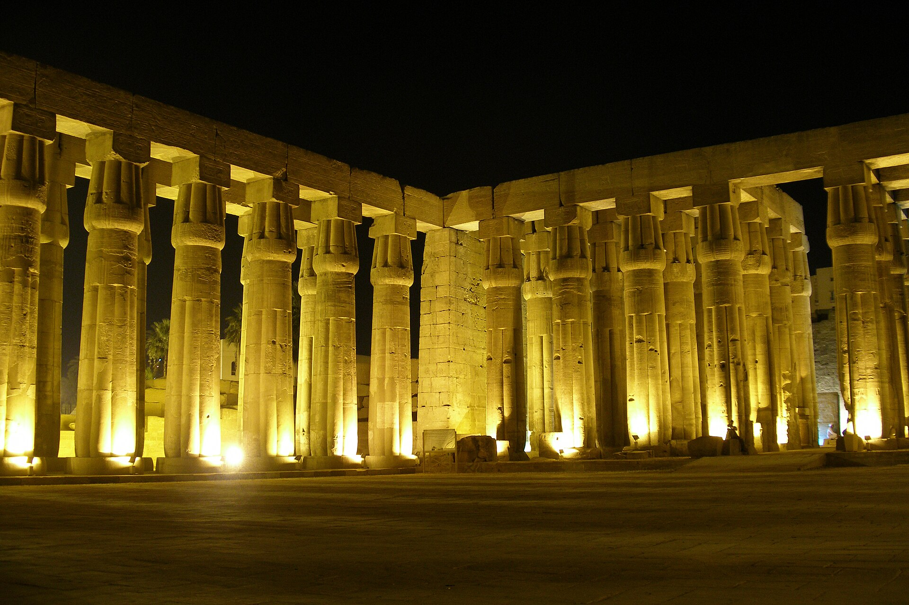
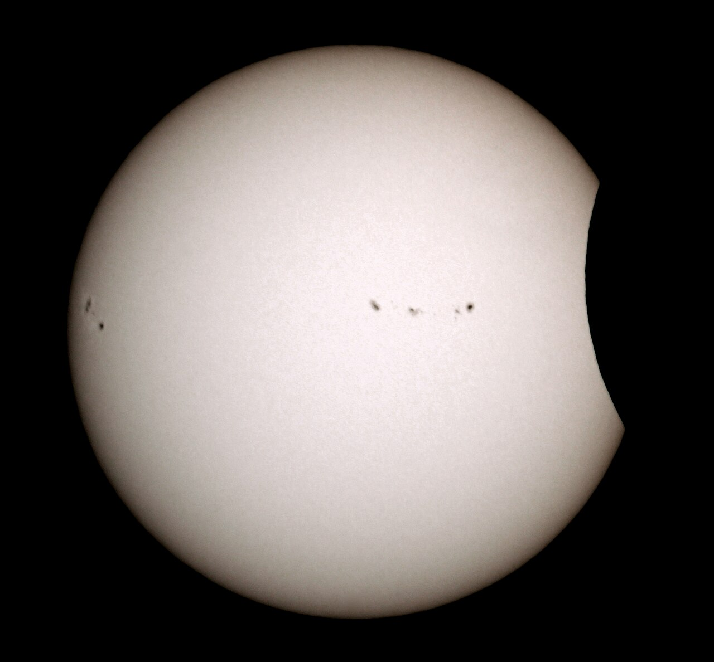
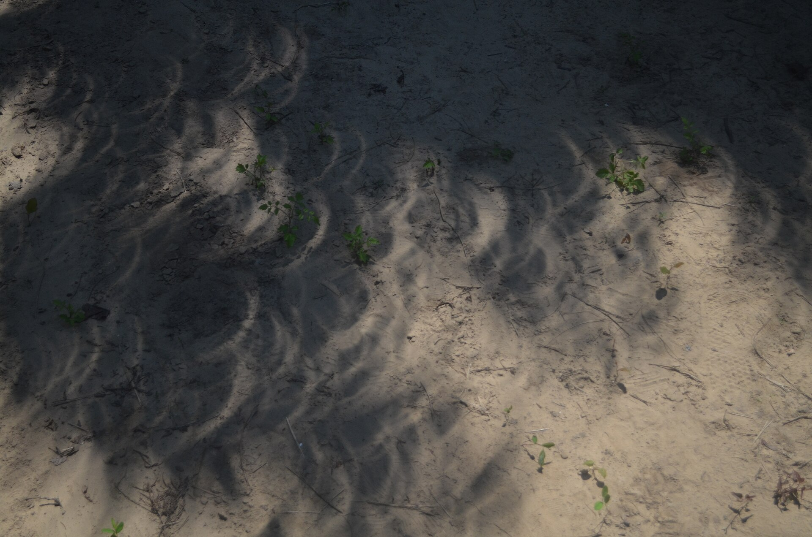
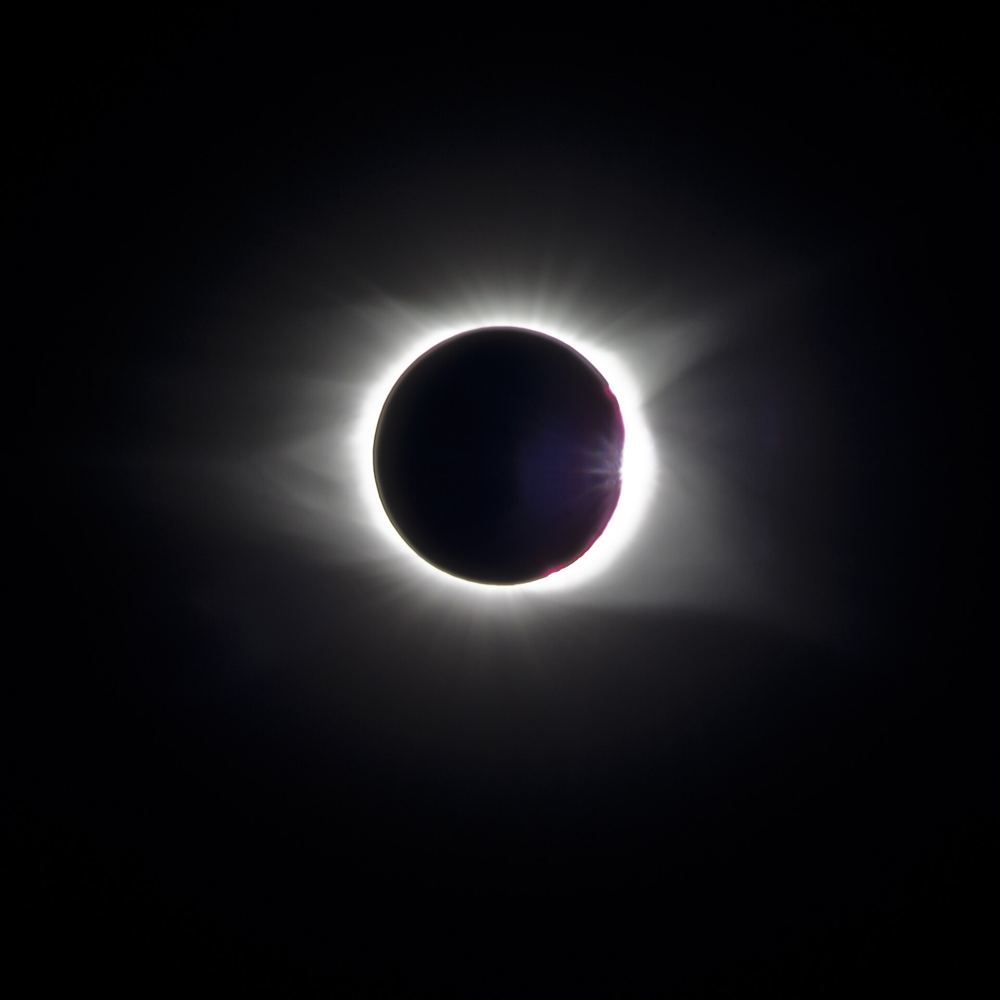

Before and after totality
- Wear glasses certified to ISO 12312-2, or use a handheld solar viewer.
- Check them for scratches or pinholes first.
- Never rely on sunglasses, smoked glass, film or CDs.
- Keep children beside an adult the whole time.
2 August 2027
On Monday afternoon the Moon covers the Sun over Luxor for 6 minutes 23 seconds, the longest total eclipse on land this century.
The path of totality also crosses southern Spain and northern Morocco, where totality lasts about 4½ minutes in the mid-morning. In Luxor it lasts nearly two minutes longer, with the Sun almost overhead in one of the driest skies on Earth.

6:23
Minutes of totality near Luxor, the longest on land between 1991 and 2114.
<1 mm
Luxor's average rain in a whole year. August skies here are almost always clear.
The partial eclipse builds for over an hour. Then the light goes in seconds. Times are counted from the start of totality.

About 1 h 20 min before. Eclipse glasses on.

About 15 min before. The air cools and the light turns sharp.

Ten seconds before. The last sunlight breaks into beads.
Glasses off. The corona, the planets and a sunset on every horizon.
Then it all runs backwards: a second diamond ring at 6:23, glasses straight back on, and the last of the Moon leaves the Sun about 1 h 20 min later.
Mid-totality. The sky is at its darkest and the corona at its widest. Look away from the Sun for a moment: the horizon glows orange all the way round.
Only totality is safe to see with bare eyes. Eye damage from the Sun is painless and can be permanent.
In early August Earth is near its farthest from the Sun, so the Sun looks a little smaller. The Moon is near its closest, so it looks a little larger. A large Moon over a small Sun makes a long totality, and Luxor sits close to the middle of the path.
Shortly after 1 pm local time. The exact second depends on where in Luxor you stand. Check NASA's interactive path map for your spot before you book.
No. Even 1% of the Sun is dazzling. The darkness, the corona and the daytime stars appear only at 100%, which is why people travel into the path.
One happens somewhere on Earth about every 18 months. Any one place waits around 375 years on average between them.
Yes. Use a solar filter over the lens during the partial phases. During totality, remove it and lock the exposure. Then put the phone down and simply look.